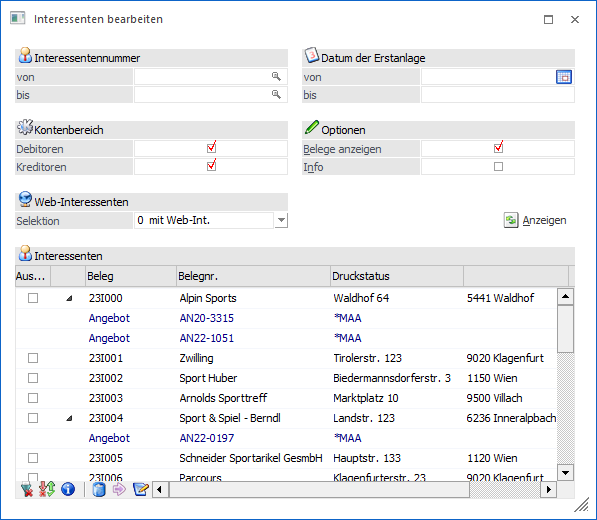
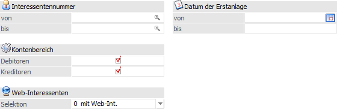
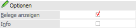
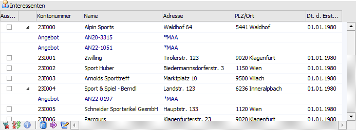
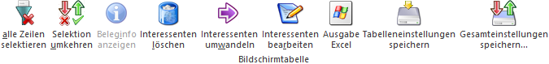
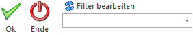

Im Menüpunkt…
1 WinLine FAKT
1 Stammdaten
1 Konten
1 Interessenten bearbeiten
… können Interessenten und deren Belege gelöscht werden oder in Personenkonten umgewandelt werden.
Dieser Programmteil wird vor allem beim Einsatz der WinLine WEB Edition benötigt, da es hier notwendig ist, schnell und einfach die über das WEB angelegten Interessenten zu bearbeiten.

Folgende Selektionskriterien und Einstellungen stehen zur Verfügung:
Selektion

In diesem Bereich kann die Grundselektion vorgenommen werden, wobei die Einstellung "Kontenbereich" und "Web-Interessenten - Selektion" benutzerspezifisch gespeichert werden.
Ø Interessentennummer von / bis
Einschränkung auf den Nummernbereich der Interessenten.
Ø Kontenbereich
An dieser Stelle kann definiert werden, ob sowohl die Debitoren (Kundeninteressenten) als auch die Kreditoren (Lieferanteninteressenten) in der Tabelle "Interessenten" angezeigt werden sollen.
Ø Web-Interessenten - Selektion
Mit Hilfe dieser Auswahl kann definiert werden, wie Interessenten aus der WebEdition selektiert werden sollen. Folgende Varianten stehen zur Verfügung:
ü 0 - mit WEB-Interessenten
ü 1 - ohne WEB-Interessenten
ü 2 - nur WEB-Interessenten
Ø Datum der Erstanlage
Einschränkung auf das Datum der Erstanlage der Interessenten. Wird hier z.B. das heutige Datum eingetragen, können alle Interessenten, die heute angelegt wurden, bearbeitet werden.
Optionen

Ø Belege anzeigen
Wenn die Option "Belege anzeigen" aktiviert ist, werden zu jedem Interessenten die Belege, in denen er als Rechnungsadresse oder als Lieferadresse vorkommt, angezeigt.
Ø Info
Wenn die Checkbox "Info" aktiviert wird, werden in der Tabelle nur mehr die Interessentennummer und der Interessentenname angezeigt. Daneben wird in ein statisches Formular angezeigt, welches pro Zeile aktualisiert wird. Es wird bei Interessentenzeilen eine Adressinfo bzw. bei Belegzeilen eine Vorschau des Beleges angezeigt.
Anzeigen
Ø Anzeigen
Durch Anwahl des Buttons "Anzeigen" wird die Tabelle der Interessenten neu befüllt.
Tabelle "Interessenten"

Nach dem Auslösen der Anzeige (siehe Button "Anzeigen") wird die Tabelle gemäß zuvor getätigten Selektion gefüllt. Von hieraus könnten die Interessenten bearbeitet, gewandelt oder gelöscht werden.
Tabellenbuttons

Ø alle Zeilen selektieren
Beim Druck des Alle-Buttons, werden alle Zeilen selektiert.
Ø Selektion umkehren
Beim Druck des Umkehren-Buttons, werden alle selektierten Zeilen deselektiert und umgekehrt.
Ø Beleginfo anzeigen
Beim Druck des Buttons "Beleginfo" wird die Vorschau des Beleges gedruckt, der in der aktuellen Zeile angezeigt wird.
Ø Interessenten löschen
Beim Druck des Buttons "Löschen" werden alle in der Tabelle aktivierten Interessenten und deren Angebote (falls vorhanden) gelöscht. Dazu wird ein Löschprotokoll ausgegeben auf dem die gelöschten Interessenten angedruckt werden. Wenn Interessenten nicht gelöscht werden konnten, so wird der entsprechende Grund ebenfalls ausgegeben (z.B. enthält Belege, Interessent wird gerade bearbeitet, Angebot des Interessenten wird gerade bearbeitet, etc.).
Ø Interessenten umwandeln
Beim Druck des Umwandlungs-Buttons wird der Interessentenstamm geöffnet, der aktuelle Interessent geladen und das Fenster Umwandlung zum Personenkonto geöffnet.
Ø Interessenten bearbeiten
Wenn dieser Button angeklickt wird, so wird der markierte Datensatz im Interessentenstamm geöffnet und kann dort verändert werden.
Buttons

Ø OK
Beim Druck des OK-Buttons wird bei allen ausgewählten WEB-Interessenten das WEB-Kennzeichen zurückgesetzt.
Ø Ende
Beim Druck des Ende-Buttons wird der Programmteil verlassen.
Ø Filter-Button
Mit dem Filter können noch genauere Selektionen vorgenommen werden. Nähere Informationen bezüglich des Filters finden Sie im Handbuch WinLine Allgemein.
Ø Anzeigen-Button
Nach Drücken des Anzeige-Buttons wird die Tabelle mit allen der Auswahl entsprechenden Interessenten gefüllt.